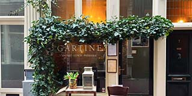
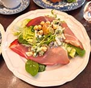
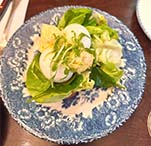
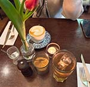
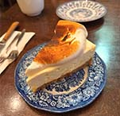
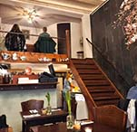
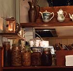

Gartine - Biologisch Restaurant
Gartine is een verborgen parel in het centrum van Amsterdam en de perfecte bestemming voor liefhebbers van duurzaam en biologisch eten. Hun producten komen rechtstreeks uit onze eigen moestuin, steunen Stichting adopteer een kip en werken met biologische eieren, wat elk gerecht een unieke en pure smaak geeft.
Een Absolute Aanrader


Zuurdesemtoast met waldorfsalade, ham uit het Zwarte Woud, geroosterd boekweit en geconfijte knoflook, evenals Eggs Benedict (met zachtgekookte eitjes van hun adoptiekippen), geserveerd op briochebrood met spinazie en Béarnaisesaus, zijn absoluut een aanrader. De ingrediënten waren vers en smaakvol, wat elke hap een ware beleving maakte.
Natuurlijke ingrediënten


Bij Gartine geniet je van heerlijke ontbijtjes, lunches en huisgemaakte taarten, allemaal met liefde bereid en volgens hun filosofie: respect voor de natuur en koken met seizoensgebonden ingrediënten. De huisgemaakte ijsthee is aromatisch en verfrissend, en de citroentaart met meringue mag je zeker niet overslaan! De taart heeft een volle, rijke smaak en een heerlijk zachte textuur.
Rust en Gastvrijheid


Het interieur straalt rust en warmte uit, waardoor je even kunt ontsnappen aan de drukte van de stad. Tot slot waren de eigenaren ontzettend vriendelijk en zorgden ervoor dat alles precies naar onze wens verliep.